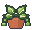
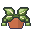
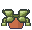

水やり帳近日公開
鉢を棚に並べておくと、水やりの目安の日にお知らせ。
水やりが遅れると、棚の鉢がだんだんしおれていく。ひと目で「この子だ」とわかります。
元気 目安の日 すぎた だいぶすぎた



- 観葉植物・多肉・ハーブなど38種から選べて、季節ごとに目安の日数が変わります。
- ボタン1つで今日の水やりを記録。「きのうあげた」もあとから入れられます。
- 土がまだしめっていたら「まだかわいていない」で1日のばせます。
- 葉水・肥料・植え替えも、同じ鉢の記録にのこせます。
- 日数はあくまで目安。毎回「土をさわって確かめてね」とひとこと添えます。
6鉢まで無料。ふやすときは買い切り(サブスクなし)。画面の下に小さな広告が出ます(何か1つ買うと消えます)。

おくりもの帳近日公開
もらった・あげたを記録して、お返しがまだの物を忘れない帳面。
記録が消えないことを、いちばん大事に作りました。保存のたびの控えと毎日の控えを iPhone の中に。あなたの iCloud にも残り、ファイルに書き出しておくこともできます。
- 「お返しがまだのもの」が一覧に出て、お知らせでも教えてくれます。
- 出産・結婚の内祝い、香典返しから、おみやげ・差し入れ・誕生日まで。
- 記録ごとに、お返しの一般的な目安(金額のはばと時期)を見られます。
- 連名でもらったものも、人ごとにまとめて見られます。
- ログインなし。記録は七色パレットには送られません。
30件まで無料。ふやすときは買い切り(サブスクなし)。広告はありません。

保証書ばこ近日公開
家電や住まいの設備を写真でしまって、保証が切れる前にお知らせ。
型番は写真から読みとり、かならずあなたが確かめてから保存します。読んだ字は「候補」として写真と並べて見せ、「これで合っていますか？」で「はい」を押したときだけ記録します。写真の文字は iPhone の中だけで読みます。
- 部屋をえらんで、よくある物をタップ。写真3枚(本体・保証書・レシート)で登録できます。
- 保証が切れる前(何日前かえらべます)と当日にお知らせ。ふだんは開かなくて大丈夫。
- こわれたときは、型番・買った日・保証書の写真がひとつの場所にそろっています。
- 写真ごとファイルに書き出して、バックアップできます。
5点まで無料。ふやすときは買い切り(サブスクなし)。広告はありません。
3つのアプリで、そろえていること
- サブスクなしふやすときは買い切り。毎月のお支払いはありません。
- ログインなしアカウントを作らずに、すぐ使えます。
- 記録はあなたの手もとにiPhone の中と、あなたの iCloud やファイルに。
- 全部日本語ボタンも説明も、日本語で読めます。
どれも iPhone 向けに、配信のじゅんびをしています。内容は公開までに変わることがあります。